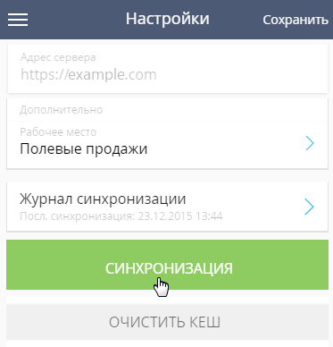

Мобильное приложение используется для работы с Creatio на переносных устройствах и является вспомогательным инструментом к основному приложению Creatio.
Настроенное мобильное приложение доступно:
- Пользователям основного приложения для использования на встречах, выставках, презентациях и т. д.
- Пользователям портала для быстрого создания обращений и переписки со службой поддержки с мобильного устройства.
Вы можете быстро создавать обращения и вести переписку со службой поддержки с мобильного устройства. При изменении статуса или поступлении нового сообщения от специалистов поддержки вы получите push-уведомление. Подробнее: Работа с порталом в мобильном приложении.
Для использования функциональности мобильного приложения необходимо выполнить несколько предварительных настроек.
Перечень разделов, доступных в мобильном приложении, настраивается при помощи мастера мобильного приложения. Для сокращения времени синхронизации между мобильным и основным приложениями рекомендуем настраивать в мобильном приложении только те разделы, которые вы будете использовать.
После установки и первого входа в мобильное приложение будет выполнена синхронизация c основным приложением Creatio. В зависимости от того, в режиме online или offline вы планируете использовать приложение, специфика работы и выполнения дальнейшей синхронизации различается.
Настроить автоматическую синхронизацию, изменить рабочее место или просмотреть информацию о последней синхронизации можно на странице настроек мобильного приложения.
Системные требования к мобильным устройствам
Чтобы установить и использовать мобильное приложение Creatio, телефон/планшет пользователя должен соответствовать системным требованиям, приведенным в таблице:
|
Характеристика |
iOS |
Android |
|---|---|---|
|
Минимальная поддерживаемая версия |
11.0 |
7.0 |
|
Рекомендуемая версия |
Последняя доступная для установки |
9.0 |
|
Минимально поддерживаемые устройства |
iPhone 6s |
Nexus 7 |
|
Рекомендуемые устройства |
|
Google Pixel и выше. |
Установить приложение
Мобильное приложение Creatio доступно для загрузки из магазинов приложений:
- App Store — для устройств с операционной системой iOS.
- Google Play — для устройств с операционной системой Android.
После загрузки приложения необходимо выполнить первый вход, после которого осуществится синхронизация c основным приложением Creatio.
Для входа в мобильное приложение введите адрес сервера Creatio, укажите рабочее место и нажмите кнопку Далее (Рис. 1) Если в системе настроен SSO, то далее откроется страница провайдера с формой ввода логина и пароля. Если SSO не настроен, то на открывшейся странице входа в мобильное приложение введите свой логин и пароль и нажмите кнопку Войти.
После этого мобильное приложение начнет процесс синхронизации с основным приложением Creatio. По завершении процесса синхронизации вы можете приступить к работе в мобильном приложении.
Для просмотра демонстрационной версии продукта нажмите кнопку Демо-вход. После этого мобильное приложение синхронизируется с демоверсией.
Настроить приложение
На странице настроек мобильного приложения вы можете:
-
Ввести параметры соединения с основным сервером Creatio.
-
Выбрать рабочее место, провести синхронизацию мобильного приложения.
-
Выйти из мобильного приложения.
-
Очистить кэш приложения (Рис. 2).
Для перехода к странице настроек выберите в главном меню приложения Настройки.
Выбрать рабочее место
Для смены рабочего места мобильного приложения нажмите на поле Рабочее место и выберите одно из предварительно настроенных рабочих мест. После смены рабочего места необходимо выполнить синхронизацию (Рис. 3).
Очистить кэш и выполнить синхронизацию
Во время синхронизации с основным приложением Creatio в мобильное приложение загружается структура базы данных и другая информация из основного приложения Creatio.
При изменении структуры (например, если были добавлены разделы мобильного приложения или детали на странице раздела) происходит обновление структуры в мобильном приложении. Для корректной синхронизации измененной структуры необходимо удалить предыдущую структуру базы данных и сами данные, хранящиеся в кэше мобильного приложения. Для этого нажмите на кнопку Очистить кэш (Рис. 4).
Режимы работы приложения
В мобильном приложении Creatio вы можете работать в режимах online или offline. Используемый режим необходимо указать в системной настройке “Режим работы мобильного приложения” (код “MobileApplicationMode”) основного приложения Creatio.
Режим online
Если вы выбрали режим работы online, то нет необходимости периодически выполнять синхронизацию. Обмен информацией происходит напрямую с сервером Creatio благодаря автоматической синхронизации. Например, если вы создали задачу в мобильном приложении, то она сразу же отобразится в основном приложении, и наоборот. Во время работы в online-режиме при стабильном соединении в правом верхнем углу приложения отображается значок .
Гибридный режим
Гибридный режим является частным случаем online режима. Он позволяет работать с данными в отсутствие стабильного соединения с сервером. Гибридный режим включается автоматически, когда у пользователя пропадает доступ к сети Интернет. В гибридном режиме есть возможность:
-
Работать с недавними записями во всех разделах. Недавними считаются последние 10 записей, с которыми работал пользователь.
-
Создавать новые записи.
-
Работать с расписанием.
Во время работы в гибридном режиме без доступа к интернету в правом верхнем углу приложения отображается значок .
После восстановления доступа к сети выполняется автоматическая синхронизация с основным приложением.
Режим offline
При использовании режима работы offline необходимо периодически вручную выполнять синхронизацию с основным приложением Creatio. Синхронизация с основным приложением выполняется с помощью веб-сервиса DataService.
Изменения, внесенные в мобильном приложении, сохраняются на сервере Creatio только после выполнения синхронизации с основным приложением и наоборот. Если при синхронизации возникли конфликты, то информация о них отобразится в журнале синхронизации.
Для выполнения синхронизации в режиме offline:
-
Нажмите кнопку меню и выберите Настройки.
-
На открывшейся странице нажмите кнопку Синхронизация (Рис. 5)
Рис. 5 — Запуск синхронизации мобильного приложения
В результате в мобильном приложении отобразятся данные из основного приложения, а в основном приложении появятся данные, которые были созданы в мобильном приложении.
Например, в основном приложении настроен бизнес-процесс, согласно которому при переводе продажи на следующую стадию в системе создается активность. При переводе продажи на такую стадию в мобильном приложении выполнится синхронизация с основным приложением. В основном приложении отработает логика создания активности, после чего активность отобразится в мобильном приложении пользователя.
Пользователь, работающий в режиме online, не заметит данной специфики, поскольку работа проходит напрямую с сервером. Новая активность в мобильном приложении появится сразу же после отработки бизнес-процесса, без запуска синхронизации. Пользователю, который работает offline, для получения активности необходимо выполнить синхронизацию.
Журнал синхронизации
Журнал синхронизации доступен только в offline режиме. Он отображает дату последней синхронизации и фиксирует записи, по которым возникли конфликты при синхронизации с основным приложением.
На вкладке Лог содержится список записей, по которым возник конфликт при последней синхронизации. Для каждой записи указывается причина конфликта.
На вкладке Данные для экспорта содержатся данные, которые не были экспортированы в основное приложение при синхронизации.
В зависимости от причины конфликта синхронизации при нажатии на запись в логе могут быть доступны следующие действия:
- Отменить изменение — отменяет все внесенные в запись изменения и удаляет запись из журнала синхронизации. При этом локальная запись перезаписывается записью с сервера. Например, администратор забрал у вас права на редактирование типа контрагента. Вы вносите изменения в поле Тип контрагента, и при синхронизации возникает конфликт. Чтобы решить его, вы можете отменить внесенные изменения, а затем запустить синхронизацию. Детально пример с конфликтом синхронизации по причине недостатка прав рассмотрен в статье Часто задаваемые вопросы по работе с мобильным приложением.
- Перейти к записи — открывает запись, в которую вы можете внести изменения. Например, администратор сделал обязательным для заполнения поле, которое прежде можно было оставить пустым. Вы добавили нового контрагента, не заполнив это поле, и при синхронизации возник конфликт. Чтобы решить его, вы можете перейти к записи и заполнить это обязательное поле, а затем запустить синхронизацию.
- Запросить права доступа — открывает мобильный почтовый клиент с шаблоном нового email-сообщения — запросом на предоставление нужных прав доступа для завершения синхронизации.